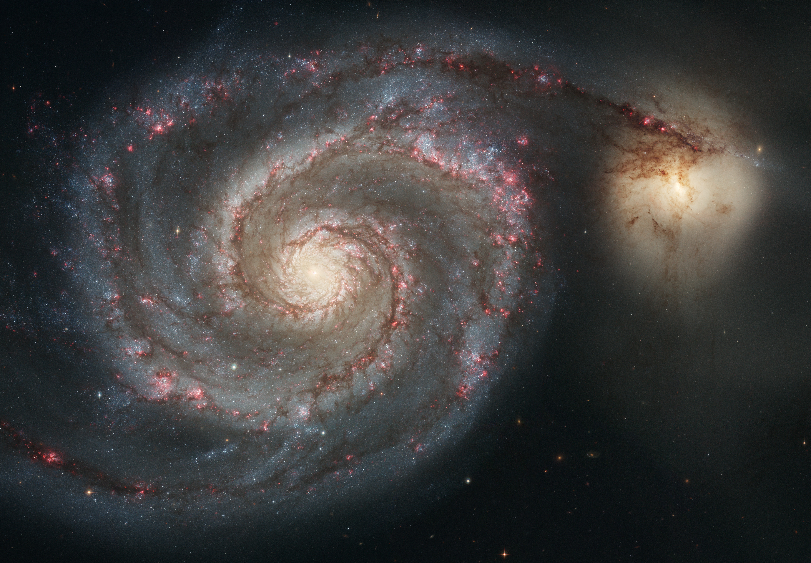

Whirlpool Galaxy and companion
NASA, ESA, S. Beckwith (STScI), and The Hubble Heritage Team (STScI/AURA)
View Hubble image record
The Hubble image could not load. Its image record is available in Sources.
MESSIER 51 / CANES VENATICI
A spiral, a companion, and the dust lanes between them.
Into the field guideThe bright spiral is NGC 5194. Its smaller companion, NGC 5195, passes behind it. Their encounter shapes the relationship we see in the arms.
The wide field locates the pair among surrounding stars. Hubble's closer view resolves the spiral: dark dust, blue star clusters, and pink regions of star formation.
FROM FIELD TO STRUCTURE
Two source images reveal different scales of the same encounter.
The detail could not load. The Hubble source record remains available below.
The dark lanes are part of the spiral, not gaps in the image. They trace the inner edges of the arms around the bright core.
Dust, pink star-forming regions, then blue clusters: the arm carries a sequence, not a single colour.
Return to the coreTwo observations of M51. Released 25 April 2005. Crops are identified; the source images retain their original colour.
ESA/Hubble reuse policy / CC BY 4.0NASA, ESA, S. Beckwith (STScI), and The Hubble Heritage Team (STScI/AURA)
View Hubble image recordESA/Hubble and Digitized Sky Survey 2. Acknowledgements: Mahdi Zamani (ESA/Hubble)
View wide-field record